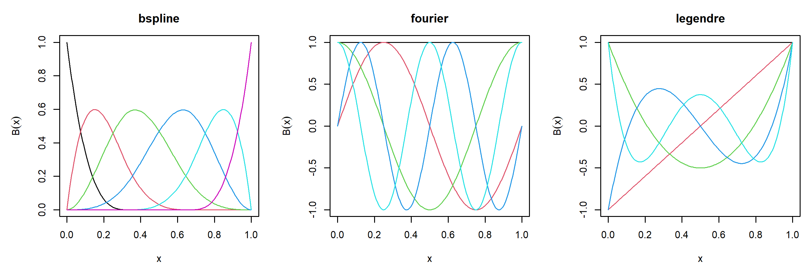

b <- bspline_basis(lower = 0, upper = 1, dimension = 6, degree = 3)
b
#> Basis: bspline
#> Functions: 6 Variables: 1
#> Domain: [0, 1]
#> Parameters:
#> degree 3
#> knots 0.3333, 0.6667
#> boundary_knots 0, 1
#> Numerical: none
round(basis_eval(b, c(0, 0.25, 0.5, 1)), 4)
#> bs1 bs2 bs3 bs4 bs5 bs6
#> [1,] 1.0000 0.0000 0.0000 0.0000 0.0000 0
#> [2,] 0.0156 0.4570 0.4570 0.0703 0.0000 0
#> [3,] 0.0000 0.0312 0.4687 0.4687 0.0312 0
#> [4,] 0.0000 0.0000 0.0000 0.0000 0.0000 15 The basis7 package
The three previous chapters describe a parameter of a distribution as a single number carried through a link function. A model makes that parameter depend on covariates, and the dependence is rarely linear. This chapter presents the representation basis7 uses for a function of one or more covariates: a fixed collection of known functions, of which the model estimates a linear combination.
The mathematics is classical. Boor (2001) is the standard account of splines, Schumaker (2007) the more general one, and Wood (2017) the reference for their use in additive models; Wahba (1990) and Green and Silverman (1994) cover the penalised formulation these bases are built for. The results the implementation rests on are stated here with a citation for each, and the arguments are not reproduced.
Section 5.1 defines a basis expansion and the four quantities the package computes from it: the values of the basis functions, their derivatives, their integrals and their inner products. It also describes what happens when a basis supplies only the first of these, since a numerical method for the other three is what allows a user-defined basis to work at once.
Section 5.2 presents the three families the package ships. B-splines are piecewise polynomials with local support, built from a recurrence that also gives their derivatives and integrals. The Fourier basis is generated by a single phase-shift identity that covers every derivative order and the antiderivative as well. The Legendre polynomials replace raw powers, whose Gram matrix is the Hilbert matrix and is unusable beyond a handful of terms.
Section 5.3 is about the matrix of inner products of the basis functions. It is the quantity that separates this package from the basis code found elsewhere, because a roughness penalty is a quadratic form in it, and because it can be computed exactly rather than approximated on a grid.
Section 5.4 treats the linear transformations of a basis. Making a basis orthonormal, restricting it to satisfy a linear constraint, and rebuilding it so that it diagonalises an inner product are the same operation with three different matrices, and the section derives each matrix from the property it is asked to produce. The last of the three is the Demmler-Reinsch construction, which is how the separation of a linear from a nonlinear effect is made exact.
Section 5.5 builds a basis of several variables as a product of bases of one. The product separates, which makes every quantity of the previous sections computable from the marginals, and the section states what each of them costs. The design matrix is the one thing that does not stay cheap, and the section ends with the two ways of evaluating a fitted function without forming it.
5.1 Basis expansions
5.1.1 The expansion and its design matrix
A basis on an interval \([a, b]\) is a finite collection of known functions \(B_1, \ldots, B_K\) defined there. The functions it represents are the linear combinations
\[ f(x) \;=\; \sum_{r=1}^{K} \beta_r B_r(x) \;=\; B(x)^\top \beta , \qquad x \in [a, b], \tag{5.1}\]
where \(B(x)\) is the column vector of the \(K\) values and \(\beta\) the vector of coefficients. The functions are fixed and known before any data are seen; the coefficients are what a model estimates. This is what makes the expansion useful in the framework of the previous chapters, since \(f\) is nonlinear in \(x\) while remaining linear in the parameters, and a linear predictor is what every routine in the toolkit already handles.
Evaluated at \(n\) points \(x_1, \ldots, x_n\), the expansion produces the \(n \times K\) design matrix \(B\) with entries \(B_{ir} = B_r(x_i)\), so that the vector of function values is \(B\beta\). The design matrix is the object a fitting routine consumes, and everything in this chapter is either a way of producing one or a matrix that acts on its columns.
Three further quantities follow from the same functions, and a modelling routine needs all of them. Differentiating Equation 5.1 term by term gives
\[ f^{(d)}(x) \;=\; \sum_{r=1}^{K} \beta_r B_r^{(d)}(x), \tag{5.2}\]
so a derivative of the fitted function is the same linear combination of a different matrix. Integrating gives the same statement for the antiderivative. And the integrals of the products \(B_r^{(d)} B_s^{(d)}\) form the matrix that a roughness penalty is a quadratic form in, which is the subject of Section 5.3.
The package therefore asks four questions of a basis, and answers them in the same shape. basis_eval() returns the design matrix, basis_deriv() the matrix of \(d\)-th derivatives, basis_int() the matrix of integrals, and basis_gram() the \(K \times K\) matrix of inner products. The first three have one row per evaluation point and one column per basis function.
A basis also knows its own interval and refuses a point outside it. The refusal happens in the body of the generic, before dispatch, so a basis written outside the package inherits it without doing anything.
5.1.2 The integral is anchored at the lower endpoint
The integral of a basis is fixed by the convention that its value at \(a\) is zero:
\[ \left(\textstyle\int B\right)_r(x) \;=\; \int_{a}^{x} B_r(v)\,\mathrm{d}v, \qquad \left(\textstyle\int B\right)_r(a) \;=\; 0 . \tag{5.3}\]
The convention is part of the contract rather than a detail of the implementation, because the antiderivative is otherwise determined only up to a constant. Any choice of constant satisfies the check that differentiating the integral returns the basis, so two bases could use different constants, each be internally consistent, and produce a sum whose integral is wrong by the difference. Fixing the value at one point removes the freedom, and the lower endpoint is the natural point to fix it at, since it belongs to every basis interval.
f <- fourier_basis(lower = -1, upper = 3, dimension = 5)
basis_int(f, -1)
#> const sin1 cos1 sin2 cos2
#> [1,] 0 0 0 0 05.1.3 Numerical methods for a basis that supplies only its values
Only basis_eval() is compulsory. The derivatives, the integral and the Gram matrix have numerical methods registered on the base class, so a new basis is a subclass and one method, and a closed form supplied later replaces the corresponding numerical method through dispatch with no change to calling code. This is the arrangement distributions7 offers a distribution defined by its density alone.
The derivatives are computed from a single finite-difference stencil, whose weights are determined by the requirement that the stencil be exact on polynomials. Writing \(\delta_1, \ldots, \delta_p\) for the offsets, in units of a step \(h\), the Taylor expansion of the combination \(\sum_j w_j f(x + \delta_j h)\) multiplies \(f^{(i)}(x)\) by \(h^i/i! \sum_j w_j \delta_j^i\). Requiring
\[ \sum_{j=1}^{p} w_j \delta_j^{\,i} \;=\; \begin{cases} 0, & i \neq d,\\ d!, & i = d, \end{cases} \qquad i = 0, \ldots, p-1, \tag{5.4}\]
therefore leaves \(h^d f^{(d)}(x)\) and nothing else, up to the first neglected term. This is a Vandermonde system in the offsets, solved once per stencil shape, and the derivative estimate is \(h^{-d}\sum_j w_j f(x + \delta_j h)\). The construction is due to Fornberg (1988), who gives a recurrence for the weights on an arbitrary set of offsets. The stencil library itself lives in numericals7 (Section 7.2), where every package of the toolkit draws it from.
Building the weights this way, rather than composing lower-order differences, is what keeps a high order usable. Each numerical differentiation multiplies the error of the one before it, so a fourth derivative reached by four nested first differences is dominated by rounding error rather than by the function. The same rule governs the validators of linkfunctions7 and distributions7: one stencil, applied to the highest order available in closed form, and never a chain.
The step is \(h = \varepsilon^{1/(d+2)}\max(1, \lvert x \rvert)\), which balances truncation error against rounding error at order \(d\), and it is capped so that the whole stencil fits inside the interval. Near an endpoint a symmetric stencil would ask for points outside the interval, where the basis is not defined, so those points use a one-sided stencil with the same number of nodes and the same order, built from the same system Equation 5.4 with shifted offsets.
The construction below defines a basis of Gaussian bumps by its values alone. Its derivative is available immediately, and agrees with the closed form nothing in the object knows about.
Bumps <- S7::new_class("Bumps", parent = basis, package = NULL)
S7::method(basis_eval, Bumps) <- function(basis, x, ...) {
p <- basis@basis_params
out <- exp(-0.5 * outer(x, p$centres, "-")^2 / p$width^2)
colnames(out) <- basis_colnames(basis)
out
}
bumps <- Bumps(
basis_name = "bumps", dimension = 5L, lower = 0, upper = 1,
basis_params = list(centres = seq(0.1, 0.9, length.out = 5), width = 0.15)
)
xs <- c(0.2, 0.5)
round(basis_deriv(bumps, xs, order = 1), 6)
#> bu1 bu2 bu3 bu4 bu5
#> [1,] -3.558833 3.558833 1.80447 0.085909 0.000581
#> [2,] -0.507831 -3.654331 0.00000 3.654331 0.507831
p <- bumps@basis_params
round(-outer(xs, p$centres, "-") / p$width^2 * basis_eval(bumps, xs), 6)
#> bu1 bu2 bu3 bu4 bu5
#> [1,] -3.558833 3.558833 1.80447 0.085909 0.000581
#> [2,] -0.507831 -3.654331 0.00000 3.654331 0.507831An object says which of its answers are numerical. A caller can then tell an exact quantity from an approximated one, and the validator can report a quantity it has no independent way of checking as unchecked rather than as passed.
basis_is_numerical(bumps)
#> basis_deriv basis_int basis_gram
#> TRUE TRUE TRUE5.2 The three families
The package ships three families, chosen so that the common shapes of covariate effect are covered. One is local, for effects with no global form; one is periodic, for effects that repeat; and one is a global polynomial, for effects that do have a form and need only a few terms. Each is generated by a recurrence or an identity that produces its derivatives and its integral as well as its values, so no order is computed by differencing.
par(mfrow = c(1, 3))
plot(bspline_basis(dimension = 6, degree = 3))
plot(fourier_basis(dimension = 5))
plot(poly_basis(dimension = 5))
5.2.1 B-splines
A B-spline basis is determined by a degree \(m\) and a non-decreasing knot vector \(t_1 \le t_2 \le \cdots \le t_{K+m+1}\). The package repeats each endpoint \(m+1\) times and spaces the \(K - m - 1\) interior knots equally in between. That configuration makes the basis span all piecewise polynomials of degree \(m\) on \([a, b]\) with \(m-1\) continuous derivatives at the interior knots. The dimension \(K\) and the degree therefore determine the number of interior knots, and \(K \ge m + 1\) is required, with equality giving the polynomials of degree \(m\) on the whole interval and no interior knot at all.
The functions themselves come from the recurrence of Cox (1972) and Boor (1972), which starts from indicators of the knot intervals and raises the degree one step at a time:
\[ B_{i,0}(x) \;=\; \begin{cases} 1, & t_i \le x < t_{i+1},\\ 0, & \text{otherwise,} \end{cases} \tag{5.5}\]
\[ B_{i,q}(x) \;=\; \frac{x - t_i}{t_{i+q} - t_i}\, B_{i,q-1}(x) \;+\; \frac{t_{i+q+1} - x}{t_{i+q+1} - t_{i+1}}\, B_{i+1,q-1}(x), \qquad q = 1, \ldots, m, \tag{5.6}\]
with the convention that a term whose denominator vanishes is taken to be zero, which is what repeated knots produce. Boor (2001) is the reference account of the recurrence and of its numerical behaviour, which is why it is used in preference to any explicit polynomial form. Every coefficient in Equation 5.6 is a convex weight, so no cancellation occurs and the evaluation is stable at any degree.
Two properties of the resulting functions matter for what follows. The first is local support: \(B_{i,m}\) vanishes outside \([t_i, t_{i+m+1}]\), so at any \(x\) at most \(m+1\) of the \(K\) functions are non-zero. The design matrix is therefore banded, and so is the Gram matrix of Section 5.3, which is what keeps a spline model of a thousand coefficients tractable. The second is that the functions form a partition of unity, \(\sum_{i=1}^{K} B_{i,m}(x) = 1\) on \([a, b]\), so the constant function is in the span and the basis needs no separate intercept.
b <- bspline_basis(dimension = 8, degree = 3)
round(basis_eval(b, c(0.1, 0.5, 0.9)), 3)
#> bs1 bs2 bs3 bs4 bs5 bs6 bs7 bs8
#> [1,] 0.125 0.594 0.260 0.021 0.000 0.000 0.000 0.000
#> [2,] 0.000 0.000 0.021 0.479 0.479 0.021 0.000 0.000
#> [3,] 0.000 0.000 0.000 0.000 0.021 0.260 0.594 0.125
rowSums(basis_eval(b, seq(0, 1, length.out = 5)))
#> [1] 1 1 1 1 1Derivatives are not computed by differencing Equation 5.6 but by a second recurrence of the same kind, which expresses the derivative of a spline of degree \(q\) through two splines of degree \(q-1\):
\[ B_{i,q}'(x) \;=\; q \left( \frac{B_{i,q-1}(x)}{t_{i+q} - t_i} \;-\; \frac{B_{i+1,q-1}(x)}{t_{i+q+1} - t_{i+1}} \right). \tag{5.7}\]
Applying it \(d\) times gives the \(d\)-th derivative exactly, and shows why a spline of degree \(m\) has exactly \(m\) non-trivial derivatives: each application lowers the degree by one, and a derivative of order above \(m\) is the zero function. The package returns the zero matrix for such an order, which is the value of that derivative rather than a refusal. The integral obeys a recurrence of the same family, and the package takes it in the form that already satisfies Equation 5.3.
round(basis_deriv(b, 0.4, order = 2), 3)
#> bs1 bs2 bs3 bs4 bs5 bs6 bs7 bs8
#> [1,] 0 0 25 -50 25 0 0 0
# a cubic spline has no fourth derivative
all(basis_deriv(b, 0.4, order = 4) == 0)
#> [1] TRUE5.2.2 The Fourier basis
The Fourier basis holds the constant function together with \(J\) sine-cosine pairs of increasing frequency. Writing \(\omega\) for the period and
\[ z \;=\; \frac{2\pi (x - a)}{\omega} \]
for the phase, the functions are \(1\), and \(\sin(jz)\), \(\cos(jz)\) for \(j = 1, \ldots, J\), so the dimension is \(K = 2J + 1\) and is necessarily odd. A sine kept without its cosine would give a basis able to represent a wave at one phase and not at another, so a dimension that would leave half a pair is refused rather than adjusted.
Every derivative and the antiderivative come from one identity. Differentiating a sinusoid rescales it and advances its phase by a quarter period, and iterating that statement gives
\[ \frac{\mathrm{d}^{k}}{\mathrm{d}x^{k}} \sin(jz) \;=\; \left(\frac{2\pi j}{\omega}\right)^{k} \sin\!\left(jz + \frac{k\pi}{2}\right), \tag{5.8}\]
and the same with the cosine in both places. No order is special: the identity is one line of code for every \(k\), and it holds for negative \(k\) as well, where it gives an antiderivative. That antiderivative is not the one Equation 5.3 asks for, and the two differ by a constant that is not the same in every column, since at \(x = a\) the raw sine columns take the value \(-\omega/(2\pi j)\) while the cosine columns are already zero. Subtracting the value at the lower endpoint corrects every column at once.
fb <- fourier_basis(dimension = 5)
basis_colnames(fb)
#> [1] "const" "sin1" "cos1" "sin2" "cos2"
round(basis_deriv(fb, c(0.1, 0.6), order = 3), 4)
#> const sin1 cos1 sin2 cos2
#> [1,] 0 -200.6768 145.8003 -613.2139 1887.278
#> [2,] 0 200.6768 -145.8003 -613.2139 1887.278The period defaults to the width of the interval, which is what makes the functions orthogonal on it and gives the closed-form Gram matrix of Section 5.3. A different period is accepted, and the basis then spans a non-integer number of periods, so the orthogonality is lost and the inner products are computed by quadrature instead.
5.2.3 The Legendre polynomials
The third family is the polynomials of degree below \(K\) on \([a, b]\), expressed in the Legendre basis rather than in raw powers. The two span the same space, so the choice between them is entirely numerical. The Gram matrix of the raw powers on \([0,1]\) has entries \(1/(r+s-1)\), which is the Hilbert matrix, whose condition number grows like \(e^{3.5K}\); a basis of ten raw powers is already close to singular in double precision. The Legendre polynomials are orthogonal, so their Gram matrix is diagonal and perfectly conditioned.
They are defined on \([-1, 1]\) by the three-term recurrence
\[ (n+1) P_{n+1}(\tau) \;=\; (2n+1)\, \tau\, P_n(\tau) \;-\; n\, P_{n-1}(\tau), \qquad P_0(\tau) = 1, \quad P_1(\tau) = \tau, \tag{5.9}\]
and carried to the basis interval by the affine change of variable \(\tau = 2(x - a)/(b - a) - 1\). Abramowitz and Stegun (1964) collects the standard identities, of which two more are used here. Differentiating
\[ P_{n+1}'(\tau) - P_{n-1}'(\tau) \;=\; (2n+1) P_n(\tau) \]
\(d-1\) further times gives a recurrence that produces each derivative order from the one below it,
\[ P_{n+1}^{(d)}(\tau) \;=\; P_{n-1}^{(d)}(\tau) \;+\; (2n+1) P_{n}^{(d-1)}(\tau), \tag{5.10}\]
so every order is exact and none is reached by differencing; the change of variable contributes a factor \(\left(2/(b-a)\right)^{d}\). Reading the same identity as an antiderivative gives
\[ \int P_n \,\mathrm{d}\tau \;=\; \frac{P_{n+1} - P_{n-1}}{2n+1}, \qquad n \ge 1, \tag{5.11}\]
which satisfies Equation 5.3 without a correction, because at \(\tau = -1\) the combination \(P_{n+1} - P_{n-1}\) is \((-1)^{n+1} - (-1)^{n-1} = 0\).
pb <- poly_basis(dimension = 5)
round(basis_eval(pb, c(0, 0.5, 1)), 4)
#> P0 P1 P2 P3 P4
#> [1,] 1 -1 1.0 -1 1.000
#> [2,] 1 0 -0.5 0 0.375
#> [3,] 1 1 1.0 1 1.000
# the same span as the raw powers, in a better conditioned form
x <- seq(0, 1, length.out = 40)
max(abs(lm.fit(basis_eval(pb, x), x^3)$fitted.values - x^3))
#> [1] 2.03559e-165.3 Inner products
5.3.1 The Gram matrix and the roughness penalty
The Gram matrix of order \(d\) collects the inner products of the \(d\)-th derivatives of the basis functions,
\[ \left(G_d\right)_{rs} \;=\; \int_{a}^{b} B_r^{(d)}(x)\, B_s^{(d)}(x)\, \mathrm{d}x , \qquad r, s = 1, \ldots, K . \tag{5.12}\]
Its importance comes from Equation 5.2. Squaring that expansion and integrating gives
\[ \int_{a}^{b} \left\{ f^{(d)}(x) \right\}^2 \mathrm{d}x \;=\; \beta^\top G_d\, \beta , \tag{5.13}\]
so the integrated squared \(d\)-th derivative of the fitted function, which is the standard measure of its roughness, is a quadratic form in the coefficients with \(G_d\) as its matrix. Penalised estimation adds \(\lambda \beta^\top G_d \beta\) to the negative log-likelihood, and the quantity the penalty needs is exactly Equation 5.12. The formulation is that of Wahba (1990) and Green and Silverman (1994), and Wood (2017) gives the modern account in the additive model setting.
\(G_d\) is symmetric and positive semidefinite by construction, and for \(d \ge 1\) it is singular: any \(\beta\) whose expansion is a polynomial of degree below \(d\) contributes nothing to the integral, so the null space has dimension at least \(d\) whenever the basis contains those polynomials. The null space is the unpenalised part of the model, the set of functions the penalty leaves alone however large \(\lambda\) becomes, and for \(d = 2\) it is the straight lines.
b <- bspline_basis(dimension = 6, degree = 3)
set.seed(1)
beta <- rnorm(6)
f2 <- function(v) (basis_deriv(b, v, order = 2) %*% beta)^2
c(
quadratic_form = drop(t(beta) %*% basis_gram(b, order = 2) %*% beta),
integral = integrate(function(v) apply(cbind(v), 1, f2), 0, 1)$value
)
#> quadratic_form integral
#> 954.9932 954.9932A difference penalty on the coefficients, \(\beta^\top \Delta_d^\top \Delta_d \beta\) with \(\Delta_d\) the \(d\)-th difference operator, is the alternative in common use and is the P-spline construction of Eilers and Marx (1996). It is a different matrix, cheaper to form and approximating Equation 5.12 for equally spaced knots, and the package accepts either wherever a penalty is an argument. The distinction matters because Equation 5.12 is a property of the basis functions alone, while a difference penalty is a property of how the coefficients are indexed.
5.3.2 Exact integration
The integrand of Equation 5.12 is a product of two piecewise polynomials, so the integral can be computed without approximation. On each knot interval the order-\(d\) derivative of a spline of degree \(m\) is a polynomial of degree \(m - d\), so the integrand there has degree \(2(m-d)\). A Gauss-Legendre rule with \(p\) nodes integrates polynomials of degree up to \(2p - 1\) exactly, so \(p = m - d + 1\) nodes leave no quadrature error at all, and the result carries only floating-point error. The rule is applied interval by interval, and the whole matrix is one crossproduct of the weighted derivative matrix evaluated at the collected nodes.
The nodes and weights are computed rather than tabulated, by the construction of Golub and Welsch (1969): the nodes are the eigenvalues of the symmetric tridiagonal Jacobi matrix of the Legendre recurrence Equation 5.9, and the weights come from the first component of each normalised eigenvector. Computing them keeps any node count available, which the rule above needs, since the count depends on the degree and on the derivative order.
The other two families do better still. Over a whole period the trigonometric functions are mutually orthogonal, and they remain so after differentiation, since Equation 5.8 only rescales a function and shifts its phase. The Gram matrix is therefore diagonal, with entries
\[ \omega \ \text{ for the constant at } d = 0, \qquad 0 \ \text{ for the constant at } d \ge 1, \qquad \frac{\omega}{2}\left(\frac{2\pi j}{\omega}\right)^{2d} \ \text{ for both members of pair } j . \tag{5.14}\]
For the Legendre polynomials the orthogonality relation \(\int_{-1}^{1} P_n P_{n'} \,\mathrm{d}\tau\), which is \(2/(2n+1)\) when \(n = n'\) and zero otherwise, gives after the change of variable a diagonal matrix with entries \((b - a)/(2n+1)\) at order zero. Their derivatives are not orthogonal, but the integrand remains a polynomial of degree at most \(2(K - 1 - d)\), so a single rule with \(K\) nodes is exact on the whole interval.
round(basis_gram(fourier_basis(dimension = 5), order = 1), 4)
#> const sin1 cos1 sin2 cos2
#> const 0 0.0000 0.0000 0.0000 0.0000
#> sin1 0 19.7392 0.0000 0.0000 0.0000
#> cos1 0 0.0000 19.7392 0.0000 0.0000
#> sin2 0 0.0000 0.0000 78.9568 0.0000
#> cos2 0 0.0000 0.0000 0.0000 78.9568
round(basis_gram(poly_basis(lower = 0, upper = 2, dimension = 4)), 6)
#> P0 P1 P2 P3
#> P0 2 0.000000 0.0 0.000000
#> P1 0 0.666667 0.0 0.000000
#> P2 0 0.000000 0.4 0.000000
#> P3 0 0.000000 0.0 0.285714The local support of Section 5.2.1 shows in the spline case as a band: \(\left(G_d\right)_{rs}\) is zero whenever \(\lvert r - s \rvert > m\), since the supports of the two functions do not overlap.
round(basis_gram(bspline_basis(dimension = 8, degree = 2), order = 1), 2)
#> bs1 bs2 bs3 bs4 bs5 bs6 bs7 bs8
#> bs1 8 -6 -2 0 0 0 0 0
#> bs2 -6 8 -1 -1 0 0 0 0
#> bs3 -2 -1 6 -2 -1 0 0 0
#> bs4 0 -1 -2 6 -2 -1 0 0
#> bs5 0 0 -1 -2 6 -2 -1 0
#> bs6 0 0 0 -1 -2 6 -1 -2
#> bs7 0 0 0 0 -1 -1 8 -6
#> bs8 0 0 0 0 0 -2 -6 85.3.3 The measure the inner product is taken against
Equation 5.12 integrates against Lebesgue measure on \([a, b]\), which is the measure a roughness penalty uses: the penalty is a statement about the function on its whole interval, and does not depend on where the data lie. Two other measures are needed elsewhere, and both are supplied as arguments to the same generic.
The empirical measure of a set of points replaces the integral by the average over them,
\[ \left(\widehat{G}_d\right)_{rs} \;=\; \frac{1}{n}\sum_{i=1}^{n} B_r^{(d)}(x_i)\, B_s^{(d)}(x_i) \;=\; \frac{1}{n} \left(B^{(d)\top} B^{(d)}\right)_{rs} , \tag{5.15}\]
which is the matrix a design matrix actually produces, and the one that appears wherever a construction is meant to depend on the design. It is what Section 5.4 diagonalises. A weighted Lebesgue measure, given by a density \(w\), integrates \(B_r^{(d)} B_s^{(d)} w\) instead, and is what appears when the penalty is meant to follow the distribution of the covariate rather than the interval.
Both are handled in the body of the generic, before dispatch, so a method never sees them and never has to implement them. A family always returns the plain Lebesgue matrix, and the two alternatives are computed the same way for every basis in the package and for every basis outside it.
set.seed(1)
xs <- rbeta(4000, 2, 2)
round(basis_gram(b, at = xs)[1:3, 1:3], 4)
#> bs1 bs2 bs3
#> bs1 0.0116 0.0144 0.0043
#> bs2 0.0144 0.0621 0.0572
#> bs3 0.0043 0.0572 0.1456
round(basis_gram(b, weight = function(v) dbeta(v, 2, 2))[1:3, 1:3], 4)
#> bs1 bs2 bs3
#> bs1 0.0110 0.0141 0.0042
#> bs2 0.0141 0.0617 0.0574
#> bs3 0.0042 0.0574 0.14585.4 Linear transformations of a basis
5.4.1 One operation, three uses
Making a basis orthonormal, restricting it so that its coefficients satisfy a linear constraint, and rebuilding it so that it diagonalises an inner product are all instances of the same operation. In each case the new functions are fixed linear combinations of the old ones,
\[ \widetilde{B}(x)^\top \;=\; B(x)^\top T , \qquad T \in \mathbb{R}^{K \times \widetilde{K}}, \tag{5.16}\]
and the three differ only in how \(T\) is computed. The matrix may have fewer columns than rows, which is how a constraint reduces the dimension of the basis, and the coefficients of the new basis are related to the old ones by \(\beta = T\gamma\).
Every quantity of the previous sections transforms with Equation 5.16 and nothing else has to be recomputed. Differentiation and integration are linear and \(T\) does not depend on \(x\), so
\[ \widetilde{B}^{(d)}(x)^\top = B^{(d)}(x)^\top T , \qquad \left(\textstyle\int \widetilde{B}\right)(x)^\top = \left(\textstyle\int B\right)(x)^\top T , \]
and the anchor Equation 5.3 survives, since a linear combination of columns that are all zero at \(a\) is zero at \(a\). The Gram matrix transforms by congruence,
\[ \widetilde{G}_d \;=\; T^\top G_d\, T , \tag{5.17}\]
which follows from Equation 5.12 by substituting Equation 5.16 under the integral. A parent whose inner products are exact therefore passes that exactness on: the transformed basis is not integrated again, and no quadrature enters at any point.
Transforms compose by multiplication rather than by nesting. Applying Equation 5.16 twice gives \(B^\top T_1 T_2\), so a chain of them is stored as the single product and costs one matrix multiplication per evaluation however long the chain is.
5.4.2 Orthonormalisation
An orthonormal basis is one whose Gram matrix is the identity, and Equation 5.17 turns that requirement into a matrix factorisation. Writing \(G_d = R^\top R\) for the Cholesky factorisation of the Gram matrix, the choice \(T = R^{-1}\) gives
\[ \widetilde{G}_d \;=\; R^{-\top} R^\top R\, R^{-1} \;=\; I . \tag{5.18}\]
The transform is read off the Gram matrix rather than estimated on a grid of points, so there is no number of points to choose and no scale factor to correct, and the result is as exact as \(G_d\) is. The factorisation exists whenever \(G_d\) is positive definite, which at order zero holds for any basis whose functions are linearly independent, and fails at higher orders, where Section 5.3.1 showed the matrix to be singular.
b <- bspline_basis(dimension = 6, degree = 3)
o <- orthonorm_basis(b)
round(basis_gram(o), 12)[1:4, 1:4]
#> on1 on2 on3 on4
#> on1 1 0 0 0
#> on2 0 1 0 0
#> on3 0 0 1 0
#> on4 0 0 0 15.4.3 Linear constraints
A model term is often required to satisfy a linear constraint on its coefficients, \(C\beta = 0\) with \(C\) of rank \(\mathrm{rank}(C)\). The usual case is a sum-to-zero condition, which removes the constant function from the span of a term so that it is identified against the intercept of the model; Wood (2017) discusses the choices available and their consequences for the fitted component.
Writing \(\beta = T\gamma\) turns the constraint into \(C T \gamma = 0\) for every \(\gamma\), so \(T\) must have the null space of \(C\) as its column space. The package takes the last \(K - \mathrm{rank}(C)\) right singular vectors of \(C\), which form an orthonormal basis of that null space, so the constrained basis spans precisely the admissible functions and no reparameterisation of \(C\) changes the space it produces. The dimension drops by the rank of the constraint, not by the number of rows written down.
grid <- seq(0, 1, length.out = 200)
cs <- constrain_basis(b, colSums(basis_eval(b, grid)))
c(before = b@dimension, after = cs@dimension)
#> before after
#> 6 5
max(abs(colSums(basis_eval(cs, grid))))
#> [1] 2.01679e-14The mechanics are what the package supplies. Which constraint a term should carry needs to know what the term means, and belongs to the layer that does.
5.4.4 The Demmler-Reinsch basis
The third transform makes the empirical inner product and the penalty diagonal at the same time. Its purpose is the separation of a linear from a nonlinear effect: an additive component \(f_j\) is written as the sum of its projection on \(\mathrm{span}\{1, x_j\}\) and a remainder, and the remainder is expanded in a basis that is empirically orthogonal to those two functions. Without that orthogonality the sum of the two parts is still estimated correctly, but the split between them is not, so a statement about the size of the nonlinear effect depends on the basis rather than on the data. Bach and Klein (2024) makes the decomposition precise and proves the consistency of the two parts separately.
The construction has three steps, following Bach and Klein (2024). The first restricts the basis to the null space of
\[ C \;=\; (\mathbf{1}, x)^\top B \;\in\; \mathbb{R}^{2 \times K}, \]
by the transform of Section 5.4.3, giving \(V_0\) of size \(K \times (K-2)\). This is where the empirical orthogonality comes from, since \(CV_0 = 0\) says exactly that the columns of \(BV_0\) are orthogonal to \(\mathbf{1}\) and to \(x\) at the observed points. The second diagonalises the pencil formed by the empirical Gram matrix Equation 5.15 and the penalty \(P\) on that subspace: with
\[ \widetilde{G} = V_0^\top \left(B^\top B / n\right) V_0 , \qquad \widetilde{P} = V_0^\top P\, V_0 , \]
the generalised eigenproblem \(\widetilde{G} \alpha_k = \lambda_k \widetilde{P} \alpha_k\) is solved by factorising \(\widetilde{P} = R^\top R\) and taking the ordinary eigendecomposition of \(R^{-\top} \widetilde{G} R^{-1}\), whose eigenvectors \(e_k\) give \(\alpha_k = R^{-1} e_k\). The third step sets \(T = V_0 A\), the columns of \(A\) being the \(\alpha_k\), and by default rescales so that the eigenvalues sum to one.
The resulting design matrix \(Z = BT\) satisfies the three properties the construction was asked for:
\[ Z^\top Z \ \text{is diagonal}, \qquad T^\top P\, T \propto I, \qquad (\mathbf{1}, x)^\top Z = 0 . \tag{5.19}\]
The penalised normal equations in these coordinates are therefore diagonal, so each coefficient is shrunk on its own, by a factor determined by its eigenvalue and the smoothing parameter. The eigen-decomposition of the smoother is available with it, without forming any matrix of the size of the sample. The eigenvalues \(\lambda_k\) measure how much empirical variance a direction carries per unit of penalty, and are the Demmler-Reinsch values of Demmler and Reinsch (1975).
set.seed(1)
xd <- sort(runif(300))
d <- dr_basis(b, xd)
z <- basis_eval(d, xd)
c(
off_diagonal = max(abs(crossprod(z)[upper.tri(crossprod(z))])),
orthogonal_to_1_and_x = max(abs(crossprod(cbind(1, xd), z)))
)
#> off_diagonal orthogonal_to_1_and_x
#> 3.991252e-14 5.240253e-14Two properties of this particular route through the algebra matter in practice. It factorises a \(2 \times K\) matrix and a \((K-2) \times (K-2)\) matrix, never anything whose size depends on \(n\). And the matrix inverted is the penalty rather than the design, so a rank-deficient \(B\) passes through unharmed, which is what equally spaced knots produce whenever the data leave a knot span empty.
xg <- sort(c(seq(0, 0.25, length.out = 120), seq(0.78, 1, length.out = 120)))
wide <- bspline_basis(dimension = 14)
c(dimension = wide@dimension, rank = qr(basis_eval(wide, xg))$rank)
#> dimension rank
#> 14 12
zg <- basis_eval(dr_basis(wide, xg), xg)
c(
off_diagonal = max(abs(crossprod(zg)[upper.tri(crossprod(zg))])),
orthogonal_to_1_and_x = max(abs(crossprod(cbind(1, xg), zg)))
)
#> off_diagonal orthogonal_to_1_and_x
#> 3.108624e-14 7.571721e-145.5 Bases of several variables
5.5.1 The product basis
A basis of several variables is built from bases of one variable by taking all products of their functions. Given marginal bases \(B_1, \ldots, B_D\) of dimensions \(K_1, \ldots, K_D\), the tensor product basis consists of the functions
\[ B_{r_1 \cdots r_D}(x_1, \ldots, x_D) \;=\; \prod_{j=1}^{D} B_{j,r_j}(x_j), \qquad r_j = 1, \ldots, K_j , \tag{5.20}\]
so its dimension is \(K = \prod_j K_j\), and the functions it represents are the sums \(f(x) = \sum_{r_1 \cdots r_D} \beta_{r_1 \cdots r_D} \prod_j B_{j,r_j}(x_j)\). This is the standard construction for a smooth interaction; Wood (2006) gives the version used in additive models and discusses the penalties that go with it.
Written as matrices, Equation 5.20 is the row-wise Kronecker product of the marginal design matrices. With \(B_j\) of size \(n \times K_j\), the design matrix of the product has row \(i\) equal to the Kronecker product of the \(D\) corresponding marginal rows,
\[ B \;=\; B_1 \ast B_2 \ast \cdots \ast B_D , \qquad \left(B_1 \ast B_2\right)_{i,\, (r-1)K_2 + s} \;=\; \left(B_1\right)_{ir}\left(B_2\right)_{is}, \tag{5.21}\]
which is the Khatri-Rao product. The column ordering it fixes is the one kronecker() uses, with the last marginal varying fastest, and it is the convention the package follows everywhere: in the column names, in the shape of a coefficient array, and in the Kronecker products of Equation 5.23 below.
A basis states how many variables it takes through the length of its endpoints, so a basis of one variable is the case \(D = 1\) rather than a separate kind of object. Evaluation points become a matrix with one column per variable, and the derivative order becomes a multi-index with one entry per variable.
tb <- tensor_basis(bspline_basis(dimension = 4), fourier_basis(dimension = 3))
tb
#> Basis: tensor(bspline, fourier)
#> Functions: 12 Variables: 2
#> Domain: [0, 1] x [0, 1]
#> Parameters:
#> marginal_dimensions 4, 3
#> Numerical: none
c(variables = basis_nvar(tb), functions = tb@dimension)
#> variables functions
#> 2 12
xy <- cbind(c(0.2, 0.5), c(0.7, 0.1))
round(basis_eval(tb, xy), 4)
#> bs1.const bs1.sin1 bs1.cos1 bs2.const bs2.sin1 bs2.cos1 bs3.const bs3.sin1
#> [1,] 0.512 -0.4869 -0.1582 0.384 -0.3652 -0.1187 0.096 -0.0913
#> [2,] 0.125 0.0735 0.1011 0.375 0.2204 0.3034 0.375 0.2204
#> bs3.cos1 bs4.const bs4.sin1 bs4.cos1
#> [1,] -0.0297 0.008 -0.0076 -0.0025
#> [2,] 0.3034 0.125 0.0735 0.1011The multi-index is required rather than recycled from a single number. A scalar order has two readings for a product basis, that order in every coordinate or that total order, and the two give different matrices, so a single non-zero order is refused instead of being resolved silently. Zero is the exception, since it means no derivative under either reading.
dim(basis_deriv(tb, xy, order = c(1, 2)))
#> [1] 2 12
try(basis_deriv(tb, xy, order = 1))
#> Error : 'order' must have one entry per variable (2), or be 0. A single non-zero order is ambiguous for a basis of several variables: it could mean that order in each coordinate, or that total order.5.5.2 Separability
Every quantity of the previous sections follows from the marginals, because the product Equation 5.20 separates. A partial derivative differentiates one factor and leaves the others alone,
\[ \frac{\partial^{\,d_1 + \cdots + d_D}}{\partial x_1^{d_1} \cdots \partial x_D^{d_D}} \prod_{j=1}^{D} B_{j,r_j}(x_j) \;=\; \prod_{j=1}^{D} B_{j,r_j}^{(d_j)}(x_j), \tag{5.22}\]
and the integral over the box from the lower corner to a point is the product of the marginal integrals, so the anchor Equation 5.3 survives: a product in which every factor vanishes at the corner vanishes there.
The consequence that matters most is for the inner products. The integral over the box of a product of separable functions factorises into \(D\) one-dimensional integrals, so
\[ G_{(d_1, \ldots, d_D)} \;=\; G_{1,d_1} \otimes G_{2,d_2} \otimes \cdots \otimes G_{D,d_D} . \tag{5.23}\]
The Gram matrix of a product therefore costs one marginal Gram matrix per variable and a Kronecker product, rather than an integration over a \(D\)-dimensional box. A tensor product of exactly integrated marginals is exactly integrated at any number of variables, where a quadrature over the box would need a number of nodes exponential in \(D\) and would lose accuracy with every variable added.
max(abs(basis_gram(tb) - kronecker(
basis_gram(bspline_basis(dimension = 4)),
basis_gram(fourier_basis(dimension = 3))
)))
#> [1] 05.5.3 Evaluating a fitted function without forming the design matrix
The one quantity that does not stay cheap is the design matrix itself, whose column count \(\prod_j K_j\) is exponential in the number of variables. Six variables with ten functions each give a million columns, and at that size the matrix cannot be formed for any useful \(n\), even though the function it represents is perfectly ordinary.
What a fit needs from the design matrix is almost never the matrix. The values of the fitted function, \(B\beta\), are what enter a likelihood, and basis_contract() computes them from the marginal evaluations. Coefficients come in two shapes, and the shape decides the cost.
The general shape is an array of dimensions \((K_1, \ldots, K_D)\), holding one coefficient per basis function. The rows of \(x\) are then processed in blocks: each block forms its own piece of Equation 5.21, multiplies it by the coefficients, and is discarded, so the peak memory is set by the block size rather than by \(n\). The number of coefficients is still \(\prod_j K_j\), so this route makes a large product usable but not cheap.
The canonical polyadic shape writes the coefficient array as a sum of \(F\) outer products, one term of which is a product of vectors, one per variable. With factor matrices \(\Gamma_j\) of size \(K_j \times F\) and \(\gamma_{j,f}\) their columns, the fitted values are
\[ f(x_1, \ldots, x_D) \;=\; \sum_{f=1}^{F} \prod_{j=1}^{D} B_j(x_j)^\top \gamma_{j,f} , \tag{5.24}\]
so each marginal is evaluated once and multiplied by its own factor matrix, giving \(D\) matrices of size \(n \times F\) whose elementwise product, summed across columns, is the answer. Neither the design matrix nor the coefficient array appears anywhere. This is the decomposition of Kolda and Bader (2009), and the factorised tensor product spline models of Rügamer (2024) are exactly the models whose coefficients are constrained to this form.
| coefficients | stored values | cost of a contraction |
|---|---|---|
| array of dimensions \((K_1, \ldots, K_D)\) | \(\prod_j K_j\) | \(O(n \prod_j K_j)\) |
| factor matrices of rank \(F\) | \(F \sum_j K_j\) | \(O(n F \sum_j K_j)\) |
big <- tensor_basis(rep(list(bspline_basis(dimension = 10)), 6))
big@dimension # the number of columns the design matrix would have
#> [1] 1000000
set.seed(2)
xbig <- matrix(runif(1000 * 6), 1000, 6)
gam <- replicate(6, matrix(rnorm(10 * 3), 10, 3), simplify = FALSE)
head(basis_contract(big, xbig, gam), 3)
#> [1] 0.022765658 -0.042417143 0.006351721For a moderate product the two routes agree, which is what fixes the meaning of the factorisation.
tb2 <- tensor_basis(bspline_basis(dimension = 5), bspline_basis(dimension = 4))
x2 <- cbind(runif(8), runif(8))
cf <- array(rnorm(20), dim = c(5, 4))
g2 <- list(matrix(rnorm(10), 5, 2), matrix(rnorm(8), 4, 2))
full <- Reduce(`+`, lapply(1:2, function(f) outer(g2[[1]][, f], g2[[2]][, f])))
c(
array_route = max(abs(basis_contract(tb2, x2, cf) -
basis_eval(tb2, x2) %*% as.numeric(aperm(cf)))),
cp_route = max(abs(basis_contract(tb2, x2, g2) -
basis_contract(tb2, x2, full)))
)
#> array_route cp_route
#> 0.000000e+00 1.110223e-16Choosing the rank \(F\) and estimating the factors is a modelling decision, and belongs to the layer that owns the parameters. Evaluating them is basis arithmetic, and belongs here.